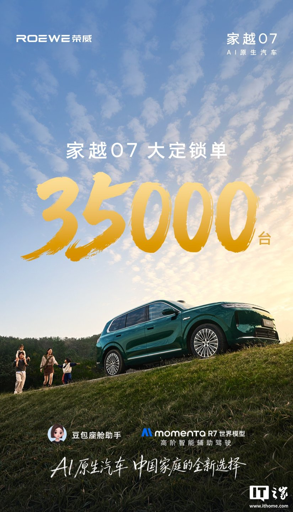

新闻 · 2026-11-28 18:00
上汽荣威家越 07 大定锁单突破 3.5 万台，全系搭载豆包座舱助手
据IT之家报道，上汽荣威宣布家越07大定锁单突破35,000台，全系搭载豆包座舱助手。该车于10月23日上市，限时权益价11.98万元起；纯电版11月27日上市，限时权益价13.28万元起。车长宽高为4900*1910*1745mm，轴距2908mm，行业首搭豆包座舱助手，并搭载最新Momenta R7世界模型。

来源与核验
单一信源报道，未交叉核实
据IT之家报道，上汽荣威宣布家越07大定锁单突破35,000台，全系搭载豆包座舱助手。该车于10月23日上市，限时权益价11.98万元起；纯电版11月27日上市，限时权益价13.28万元起。车长宽高为4900*1910*1745mm，轴距2908mm，行业首搭豆包座舱助手，并搭载最新Momenta R7世界模型。

单一信源报道，未交叉核实